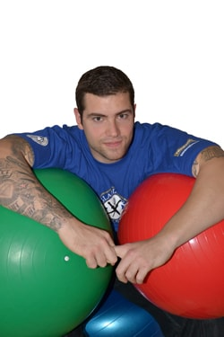

|  |
Jakub Šurkaosobní trenér, fitness instruktor |
KontaktTelefon: +420 721 256 205 E-mail: jakubsurka@seznam.cz |
- vytvoření individuálního tréninkového programu přizpůsobeného vaším potřebám a cílům
- profesionální, pozitivní a motivující přístup
- odstranění sval. dysbalancí
- rychlejší a bezpečnější dosažení cílů (ať už je to redukce váhy, nebo zlepšení se v oblasti jakéhokoli jiného problému)
- jste pod stálým dozorem a tím se zvyšuje efektivita procvičení
- neznalost cviků a jejich špatné provedení může mít za následek zranění, nebo zvětšení zdravotního problému, a proto je lepší cvičit pod odborným dohledem
- zlepší se tím schopnost regenerovat po akutní únavě
- možnost pohybem redukovat nadváhu, nebo zvýšit sval. hmotu
- odstranění poruch hybného systému
- kardiovaskulární a metabolická prevence chorob
Předcházíme tím zdravotním potížím jako je např.:
- ICHS (ischemická choroba srdeční)- což je nepoměr mezi potřebou a dodávkou kyslíku
- jako příčina je možná zvýšená potřeba kyslíku myokardem (svalová vrstva srdce tvořena příčně pruhovanou svalovinou srdeční), snížení obsahu kyslíku v krvi, nebo snížený průtok krve kardiovaskulárními artériemi
- kardiovaskulární a metabolická prevence chorob
- je nejčastější formou cukrovky u nás
- souvisí spíše s vyšším věkem, obezitou, nedostatkem pohybu a nezdravím životním stylem
- tělo sice inzulín vytváří, ale neumí ho kvalitně využít
- je metabolická kostní choroba, která se projevuje řídnutím kostní tkáně
- v kostech se vytváří póry, dochází k úbytku vápníku, vitamínu D a jiných minerálů
- je stav, ve kterém přirozená energetická rezerva, která je uložena v tukové tkáni stoupla nad obvyklou úroveň a poškozuje zdraví
Bohužel jsou věci, které za nás nikdo jiný neudělá. A pro naše zdraví jsou zásadní. Přijďte si k nám zlepšit svou kondici i náladu :-)
{kind=link}